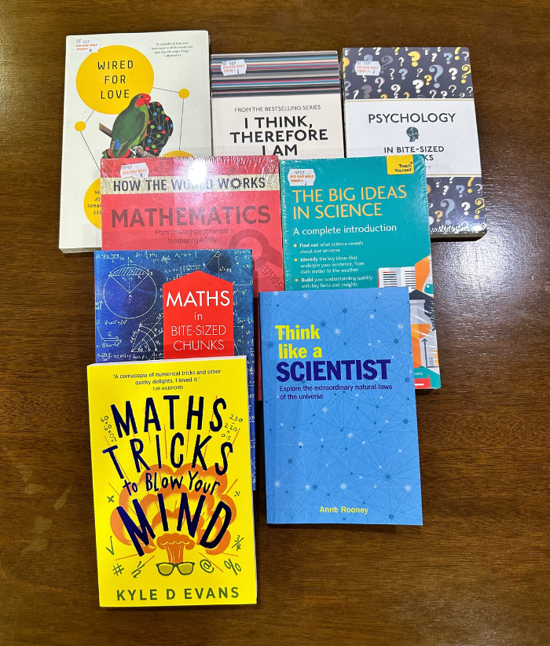

The naturalistic intelligence is the ability to observe, identify, and understand natural elements, such as animals, plants, and landscapes.
I appreciate nature and I prefer natural landscapes more than urban citiscapes (both are still aesthetically good for me though).
The logical-mathematical intelligence is the ability to understand and identify logical or numerical patterns and non-numerical logical relationships.
I enjoy a lot of puzzles and other similar problem-solving activities. This is my strongest intelligence among the MIs.

The visual-spatial intelligence involves the ability to perceive, analyze, and understand visual information and store and recall them in the mind.
I have eidetic memory, so I usually rely on visualization. This intelligence works very well in pair with my logical-mathematical intelligence.
The bodily-kinesthetic intelligence refers to the ability to use gross or fine motor skills to express emotions or create, learn, or solve problems.
I enjoy a lot of physical activities such as sports, working out, and simply having a walk.
The intrapersonal intelligence involves the ability to understand yourself and have an awareness of your own emotions, needs, capacities, and motivations.
I am born an introvert. I am also very self-aware and self-conscious.
The interpersonal intelligence refers to the ability to sense, understand and relate to others’ feelings and motivations.
I am very perceptive of others. I can usually recognize and understand how they feel.
The musical intelligence is characterized by having an understanding of musical structure, rhythm, pitch, and melody and appreciation for musical patterns.
I appreciate and enjoy listening to music, as well as interpreting them.

The linguistic intelligence is characterized by a strong understanding of written and spoken language, affinity for learning new languages, and the ability to use language to achieve goals.
I enjoy reading fiction, self-help, and informative books. I also enjoy reading manga.